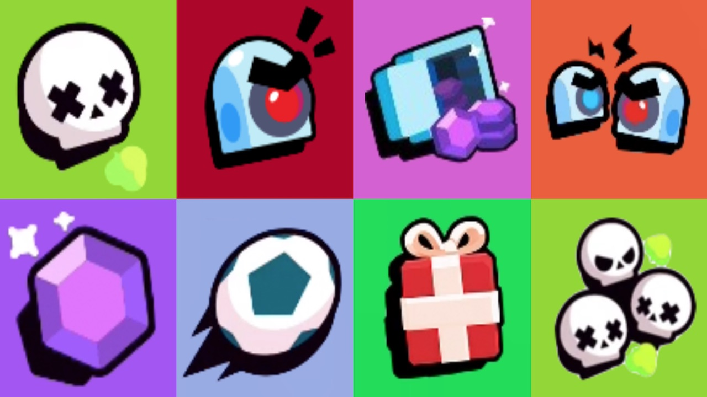
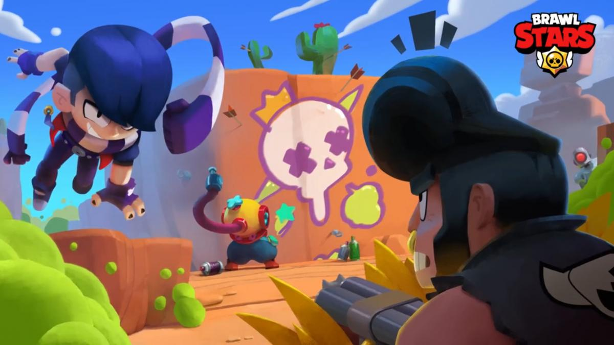
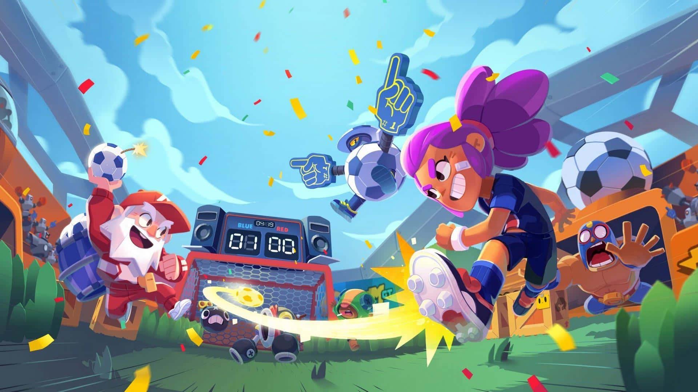
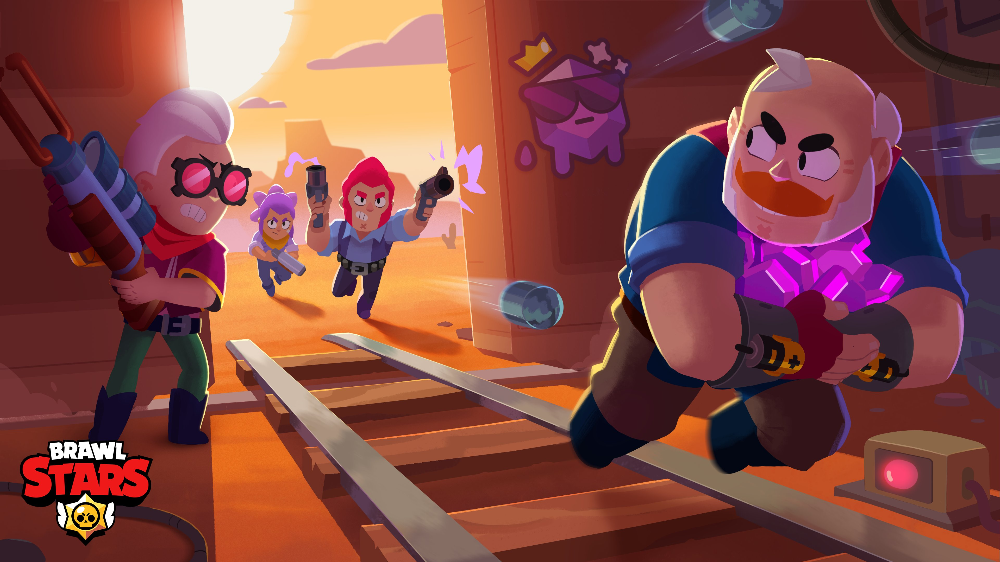
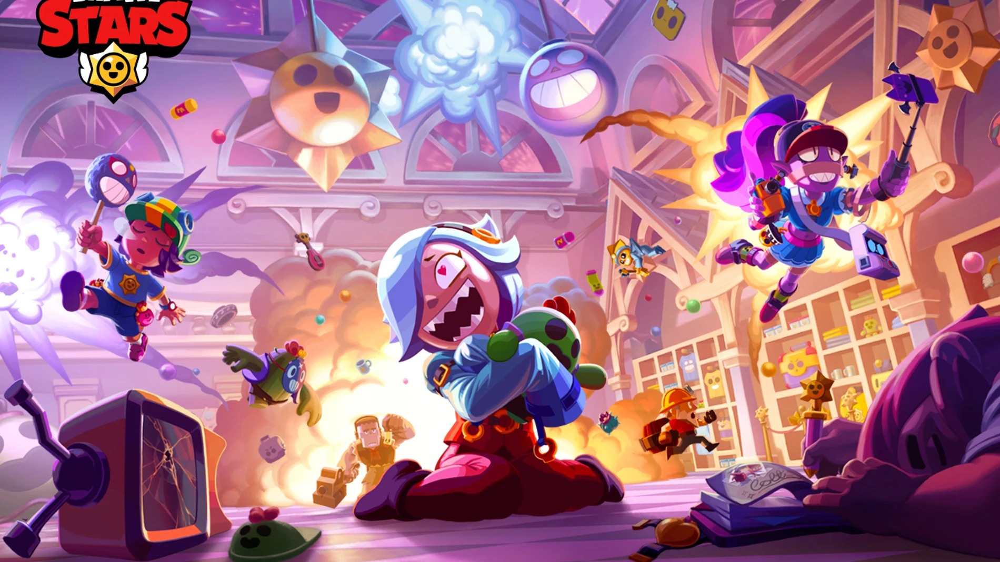
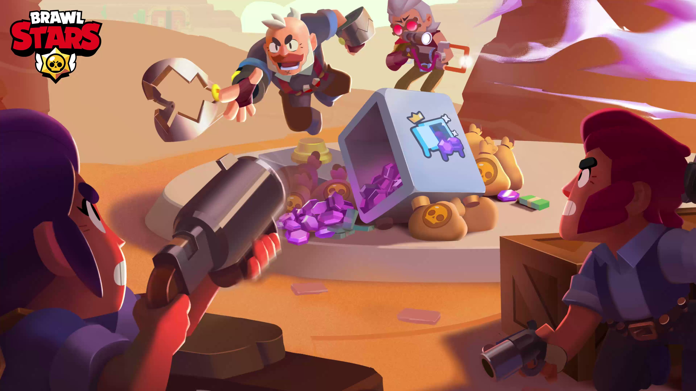

Modos de Juego
Navegación
¿Qué modos de juego existen en Brawl Stars?
En Brawl Stars existen diversos modos de juego, cada uno pudiendo darte distintas recompensas dependiendo de su dificultad. Los modos pueden variar desde Supervivencia entre todos los jugadores hasta partidos de Futbol, además existiendo algunos permanentes, otros semanales y unos cuantos los cuales solo aparecen en eventos de temporada o únicos
Supervivencia
En este evento, hay 10 jugadores sin equipos. El objetivo del juego es derrotar a todos tus oponentes y ser el último en pie. Puedes obtener Potenciadores al derrotar a los Brawlers o al abrir Cajas en el mapa.Cuanto más sobrevivas, más trofeos recibirás. A medida que avanza la partida, un gas venenoso mortal sopla desde los bordes de la arena, lo que obliga a todos los Brawlers a entrar en un área cada vez más pequeña y por esto más peligrosa
Balón Brawl
Balón Brawl es un modo de juego que consiste en que aparte de combatir entre unos dos equipos de tres o de cinco Brawlers , lo que tienen que hacer es marcar 2 goles en la portería del rival con una pelota de futbol que aparece en el centro de la cancha en el inicio de la partida. Si no se han marcado 2 goles del mismo equipo antes de que se acabe el tiempo, ganará el que haya marcado más o en caso de empate habrá un tiempo extra de un minuto para marcar el último gol.
Atrapa Gemas
Atrapa Gemas es un modo de juego de dos equipos de tres jugadores cada uno. El objetivo es conseguir y mantener durante 15 segundos 10 gemas entre todos los miembros de tu equipo. Estas aparecerán en el centro del mapa cada cierto tiempo. Si mueres pierdes todas las gemas que conseguiste y estarán en el lugar donde moriste donde podrán recogerlas tus aliados o tus enemigos. Si el tiempo se acaba antes de que un equipo consiga las 10 gemas por los 10 segundos seguidos, gana el equipo con mas gemas en ese momento o si tienen la misma cantidad, hasta que uno de ellos tenga más.
Noqueo
Noqueo es un modo 3v3.El objetivo de cada equipo es derrotar a los jugadores del equipo rival en cada ronda durante tres rondas. Este evento es diferente al resto de los eventos 3v3; cuando un jugador es derrotado, no podrá reaparecer y su equipo tendrá que jugar sin este hasta que empieze la siguiente ronda. Cuando los tres miembros de un equipo son derrotados, el equipo derrotado pierde esa ronda y comienza la siguiente. Si un equipo gana dos rondas, ganarán la partida. Si un equipo gana la primera ronda y el equipo rival gana la segunda, resultará en una tercera y última ronda para decidir cuál equipo ganará. Después de un periodo de tiempo en el que ningún equipo haya ganado la ronda actual o si solo queda un miembro de cada equipo, empezará a soplar un gas venenoso desde las partes superiores e inferiores del mapas, similar al del emodo Supervivencia
Atraco
Atraco es un modo de juego en el que dos equipos de tres jugadores compiten para destruir la caja fuerte del equipo contrario. Cada equipo tiene su propia caja fuerte, que está ubicada en su base.El objetivo es defender tu caja fuerte y también llegar a la caja fuerte enemiga y destruirla antes de que el otro equipo haga lo mismo. Si se acaba el tiempo, gana el equipo que haya hecho más daño a la caja fuerte enemiga.